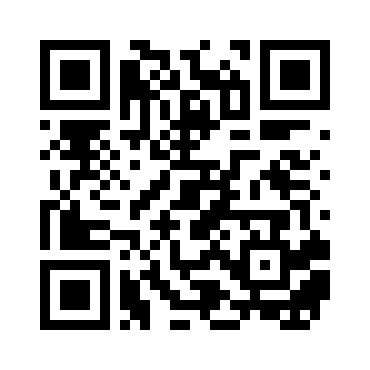
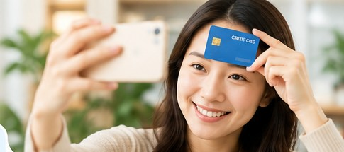
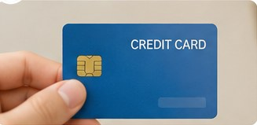
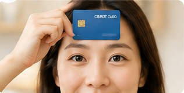
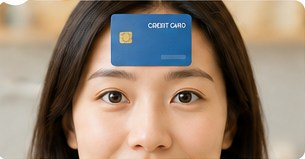
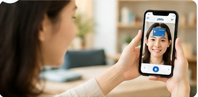

① Measure with your phone · Recommended
On your computer, scan the QR code with your phone. Keep the computer open for instructions while you take the selfie on your phone.

smartpd-lab.github.io/smartpd-web/
Take a clear photo with your phone or computer, then explore an experimental card-based measurement.
Research only. The uncorrected estimate is NOT validated for ordering prescription eyewear.

On your computer, scan the QR code with your phone. Keep the computer open for instructions while you take the selfie on your phone.

smartpd-lab.github.io/smartpd-web/
Use the webcam on this computer. Sit facing the camera with your eyes near camera height. Follow the same card placement guide below.
The camera controls are below the photo guide.

Use a flat plastic card sized 85.60 × 53.98 mm. Cover sensitive details without hiding edges or corners.

Put the card against your forehead above the eyebrows; grip its right edge without hiding the corners.

Keep your face straight, both eyes visible, and the card level.

Hold your phone around arm's length and wait for the three-second timer.
Images illustrate the setup, not measurement accuracy. Do not photograph unmasked payment-card details.
Your image is processed in this browser only; this version has no upload or analytics code.
Tap the image four times in this order: card left corner, card right corner, left pupil center, right pupil center. Use the top long edge of the card. This is a 2D pixel ratio only, with no depth, lens, gaze or perspective correction.
Uncorrected experimental estimate — NOT a prescription-ready PD. Forehead card depth, pupil location, camera geometry and near fixation can cause significant errors. Verify with an optician.
Capture three separate photos under similar conditions. Save each experimental result. Data stays in this browser tab only.